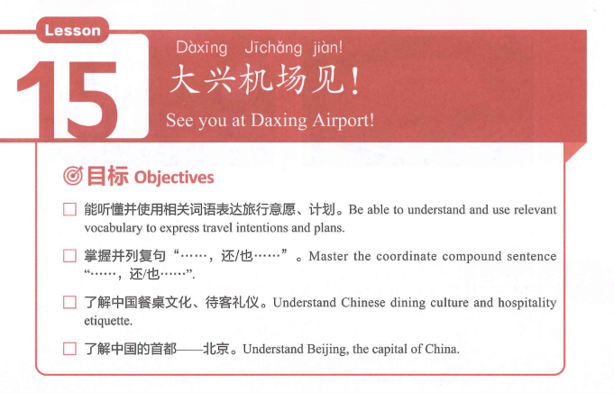
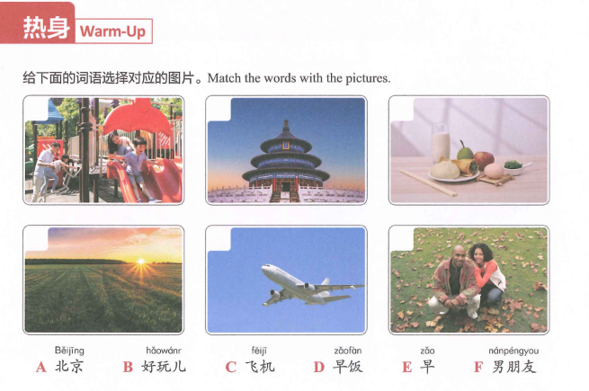
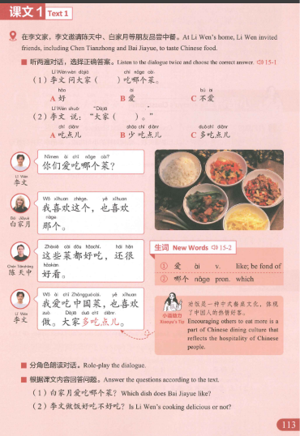
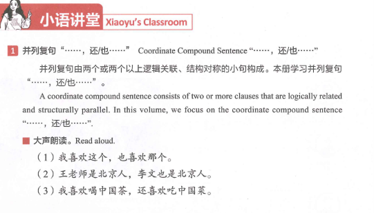
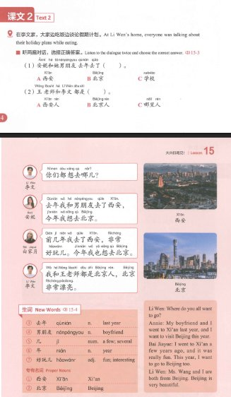
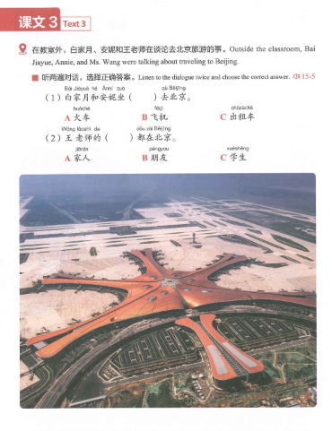
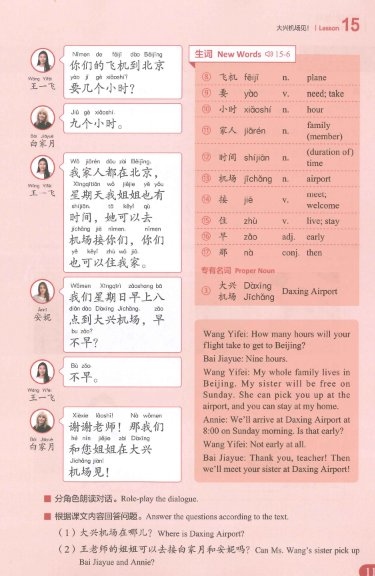
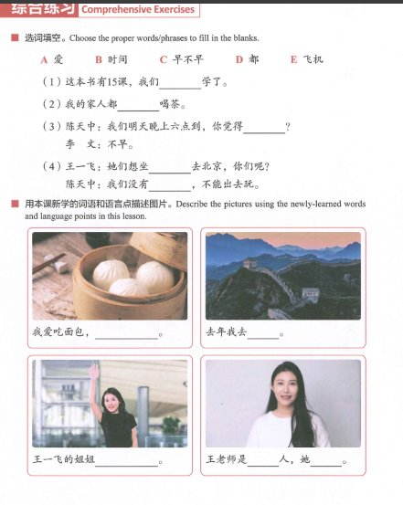

Latihan percakapan · 对话练习

Arti: "See you at Daxing Airport!" / "Sampai jumpa di Bandara Daxing!"
大兴 (Dàxīng = nama distrik di Beijing),
机场 (jīchǎng = bandara), dan
见 (jiàn = berjumpa / sampai jumpa).







Pilihan yang tepat: D. 都
Pilihan yang tepat: A. 爱
Pilihan yang tepat: C. 早不早
Pilihan yang tepat: E. 飞机 dan B. 时间